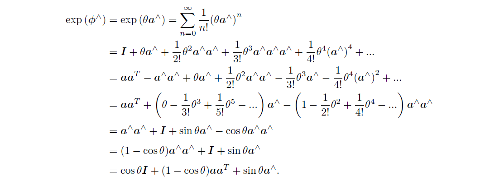
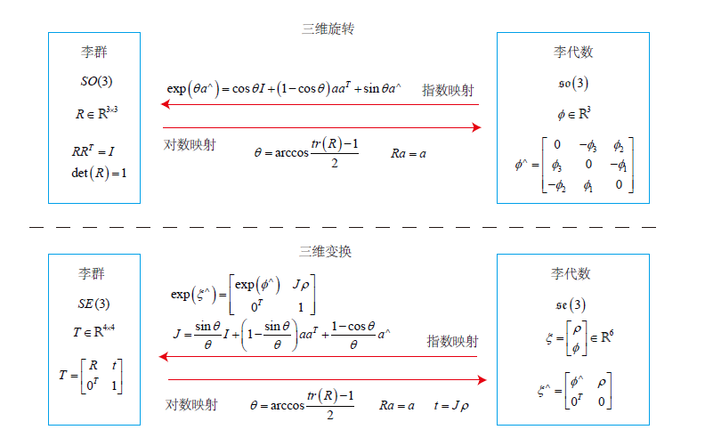
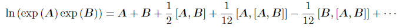
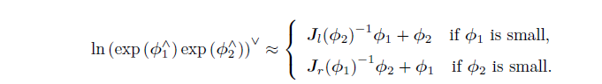

<!DOCTYPE html>
<html lang="zh-CN">
<head>
  <meta charset="UTF-8">
<meta name="viewport" content="width=device-width, initial-scale=1, maximum-scale=2">
<meta name="theme-color" content="#222">
<meta name="generator" content="Hexo 4.2.1">
  <link rel="apple-touch-icon" sizes="180x180" href="/images/avatar.jpg">
  <link rel="icon" type="image/png" sizes="32x32" href="/images/bitbug_favicon-m.ico">
  <link rel="icon" type="image/png" sizes="16x16" href="/images/bitbug_favicon.ico">
  <link rel="mask-icon" href="/images/avatar.jpg" color="#222">

<link rel="stylesheet" href="/css/main.css">


<link rel="stylesheet" href="/lib/font-awesome/css/all.min.css">

<script id="hexo-configurations">
    var NexT = window.NexT || {};
    var CONFIG = {"hostname":"yoursite.com","root":"/","scheme":"Gemini","version":"7.8.0","exturl":false,"sidebar":{"position":"right","display":"post","padding":18,"offset":12,"onmobile":false},"copycode":{"enable":false,"show_result":false,"style":null},"back2top":{"enable":true,"sidebar":false,"scrollpercent":false},"bookmark":{"enable":false,"color":"#222","save":"auto"},"fancybox":false,"mediumzoom":false,"lazyload":false,"pangu":false,"comments":{"style":"tabs","active":null,"storage":true,"lazyload":false,"nav":null},"algolia":{"hits":{"per_page":10},"labels":{"input_placeholder":"Search for Posts","hits_empty":"We didn't find any results for the search: ${query}","hits_stats":"${hits} results found in ${time} ms"}},"localsearch":{"enable":true,"trigger":"auto","top_n_per_article":1,"unescape":false,"preload":false},"motion":{"enable":true,"async":false,"transition":{"post_block":"fadeIn","post_header":"slideDownIn","post_body":"slideDownIn","coll_header":"slideLeftIn","sidebar":"slideUpIn"}},"path":"search.xml"};
  </script>

  <meta name="description" content="李群和李代数的知识记录，为SLAM后端优化做基础">
<meta property="og:type" content="article">
<meta property="og:title" content="李群和李代数">
<meta property="og:url" content="http://yoursite.com/2021/03/05/%E6%9D%8E%E7%BE%A4%E5%92%8C%E6%9D%8E%E4%BB%A3%E6%95%B0/index.html">
<meta property="og:site_name" content="不愧是我">
<meta property="og:description" content="李群和李代数的知识记录，为SLAM后端优化做基础">
<meta property="og:locale" content="zh_CN">
<meta property="og:image" content="http://yoursite.com/2021/03/05/%E6%9D%8E%E7%BE%A4%E5%92%8C%E6%9D%8E%E4%BB%A3%E6%95%B0/so3.png">
<meta property="og:image" content="http://yoursite.com/2021/03/05/%E6%9D%8E%E7%BE%A4%E5%92%8C%E6%9D%8E%E4%BB%A3%E6%95%B0/so3se3.png">
<meta property="og:image" content="http://yoursite.com/2021/03/05/%E6%9D%8E%E7%BE%A4%E5%92%8C%E6%9D%8E%E4%BB%A3%E6%95%B0/bch.png">
<meta property="og:image" content="http://yoursite.com/2021/03/05/%E6%9D%8E%E7%BE%A4%E5%92%8C%E6%9D%8E%E4%BB%A3%E6%95%B0/bch2.png">
<meta property="article:published_time" content="2021-03-05T07:32:24.000Z">
<meta property="article:modified_time" content="2021-03-05T14:19:30.434Z">
<meta property="article:author" content="Adin">
<meta property="article:tag" content="基础知识">
<meta property="article:tag" content="SLAM">
<meta name="twitter:card" content="summary">
<meta name="twitter:image" content="http://yoursite.com/2021/03/05/%E6%9D%8E%E7%BE%A4%E5%92%8C%E6%9D%8E%E4%BB%A3%E6%95%B0/so3.png">

<link rel="canonical" href="http://yoursite.com/2021/03/05/%E6%9D%8E%E7%BE%A4%E5%92%8C%E6%9D%8E%E4%BB%A3%E6%95%B0/">


<script id="page-configurations">
  // https://hexo.io/docs/variables.html
  CONFIG.page = {
    sidebar: "",
    isHome : false,
    isPost : true,
    lang   : 'zh-CN'
  };
</script>

  <title>李群和李代数 | 不愧是我</title>
  


  <noscript>
  <style>
  .use-motion .brand,
  .use-motion .menu-item,
  .sidebar-inner,
  .use-motion .post-block,
  .use-motion .pagination,
  .use-motion .comments,
  .use-motion .post-header,
  .use-motion .post-body,
  .use-motion .collection-header { opacity: initial; }

  .use-motion .site-title,
  .use-motion .site-subtitle {
    opacity: initial;
    top: initial;
  }

  .use-motion .logo-line-before i { left: initial; }
  .use-motion .logo-line-after i { right: initial; }
  </style>
</noscript>

</head>

<body itemscope itemtype="http://schema.org/WebPage">
  <div class="container use-motion">
    <div class="headband"></div>

    <header class="header" itemscope itemtype="http://schema.org/WPHeader">
      <div class="header-inner"><div class="site-brand-container">
  <div class="site-nav-toggle">
    <div class="toggle" aria-label="切换导航栏">
      <span class="toggle-line toggle-line-first"></span>
      <span class="toggle-line toggle-line-middle"></span>
      <span class="toggle-line toggle-line-last"></span>
    </div>
  </div>

  <div class="site-meta">

    <a href="/" class="brand" rel="start">
      <span class="logo-line-before"><i></i></span>
      <h1 class="site-title">不愧是我</h1>
      <span class="logo-line-after"><i></i></span>
    </a>
      <p class="site-subtitle" itemprop="description">想法和故事打包于此</p>
  </div>

  <div class="site-nav-right">
    <div class="toggle popup-trigger">
        <i class="fa fa-search fa-fw fa-lg"></i>
    </div>
  </div>
</div>


<nav class="site-nav">
  <ul id="menu" class="main-menu menu">
        <li class="menu-item menu-item-home">

    <a href="/" rel="section"><i class="fa fa-home fa-fw"></i>首页</a>

  </li>
        <li class="menu-item menu-item-tags">

    <a href="/tags/" rel="section"><i class="fa fa-tags fa-fw"></i>标签<span class="badge">24</span></a>

  </li>
        <li class="menu-item menu-item-categories">

    <a href="/categories/" rel="section"><i class="fa fa-th fa-fw"></i>分类<span class="badge">14</span></a>

  </li>
        <li class="menu-item menu-item-archives">

    <a href="/archives/" rel="section"><i class="fa fa-archive fa-fw"></i>时间线<span class="badge">46</span></a>

  </li>
      <li class="menu-item menu-item-search">
        <a role="button" class="popup-trigger"><i class="fa fa-search fa-fw"></i>搜索
        </a>
      </li>
  </ul>
</nav>


  <div class="search-pop-overlay">
    <div class="popup search-popup">
        <div class="search-header">
  <span class="search-icon">
    <i class="fa fa-search"></i>
  </span>
  <div class="search-input-container">
    <input autocomplete="off" autocapitalize="off"
           placeholder="搜索..." spellcheck="false"
           type="search" class="search-input">
  </div>
  <span class="popup-btn-close">
    <i class="fa fa-times-circle"></i>
  </span>
</div>
<div id="search-result">
  <div id="no-result">
    <i class="fa fa-spinner fa-pulse fa-5x fa-fw"></i>
  </div>
</div>

    </div>
  </div>

</div>
    </header>

    
  <div class="back-to-top">
    <i class="fa fa-arrow-up"></i>
    <span>0%</span>
  </div>


    <main class="main">
      <div class="main-inner">
        <div class="content-wrap">
          

          <div class="content post posts-expand">
            

    
  
  
  <article itemscope itemtype="http://schema.org/Article" class="post-block" lang="zh-CN">
    <link itemprop="mainEntityOfPage" href="http://yoursite.com/2021/03/05/%E6%9D%8E%E7%BE%A4%E5%92%8C%E6%9D%8E%E4%BB%A3%E6%95%B0/">

    <span hidden itemprop="author" itemscope itemtype="http://schema.org/Person">
      <meta itemprop="image" content="/images/avatar.jpg">
      <meta itemprop="name" content="Adin">
      <meta itemprop="description" content="nobody">
    </span>

    <span hidden itemprop="publisher" itemscope itemtype="http://schema.org/Organization">
      <meta itemprop="name" content="不愧是我">
    </span>
      <header class="post-header">
        <h1 class="post-title" itemprop="name headline">
          李群和李代数
        </h1>

        <div class="post-meta">
            <span class="post-meta-item">
              <span class="post-meta-item-icon">
                <i class="far fa-calendar"></i>
              </span>
              <span class="post-meta-item-text">发表于</span>
              

              <time title="创建时间：2021-03-05 15:32:24 / 修改时间：22:19:30" itemprop="dateCreated datePublished" datetime="2021-03-05T15:32:24+08:00">2021-03-05</time>
            </span>
            <span class="post-meta-item">
              <span class="post-meta-item-icon">
                <i class="far fa-folder"></i>
              </span>
              <span class="post-meta-item-text">分类于</span>
                <span itemprop="about" itemscope itemtype="http://schema.org/Thing">
                  <a href="/categories/SLAM/" itemprop="url" rel="index"><span itemprop="name">SLAM</span></a>
                </span>
            </span>

          

        </div>
      </header>

    
    
    
    <div class="post-body" itemprop="articleBody">

      
        <p>李群和李代数的知识记录，为SLAM后端优化做基础</p>
<a id="more"></a>
<h2 id="群和李群"><a href="#群和李群" class="headerlink" title="群和李群"></a>群和李群</h2><p>群是<strong>一种集合</strong>加上<strong>一种运算</strong>的代数结构。如果把集合记作$A$，把运算记为$\cdot$，则群可以记为$G={ A,·}$。群要去运算满足以下四个条件：</p>
<ol>
<li>封闭性，运算之后的结果仍属于集合。$\forall a_1,a_2 \in A, a_1 \cdot a_2 \in A$</li>
<li>结合律：$\forall a_1, a_2, a_3 \in A \quad (a_1 \cdot a_2)\cdot a_3 = a_1 \cdot (a_2 \cdot a_3)$</li>
<li>幺元：$\exist a_0 \in A \quad s.t  \quad a_0 \cdot a_1 = a_1 \cdot a_0 = a_1$</li>
<li>逆运算：$\forall a\in A, \quad \exist a^{-1} \in A, \quad s.t \quad a \cdot a^{-1} = a_0$</li>
</ol>
<p>封、结、幺、逆</p>
<p>常见的群：</p>
<ol>
<li>一般线性群，可逆矩阵和乘法运算构成$GL(n)$。</li>
<li>特殊正交群。正交矩阵，对于乘法运算构成群。旋转矩阵$R$所在的$SO(3),SO(2)$就是该群。</li>
<li>特殊欧式群。变换矩阵$T$属于的$SE(3), SE(2)$。</li>
</ol>
<p>李群的李是指，该群具有连续（光滑）的性质，像整数群就不属于李群。$SO(3) \quad SE(3)$都是李群。<br><em>每一个李群都有相应的李代数。</em></p>
<h2 id="李代数"><a href="#李代数" class="headerlink" title="李代数"></a>李代数</h2><p>李代数so3的引出是通过对旋转矩阵的导数计算得到的。</p>
<script type="math/tex; mode=display">R(t)R(t)^{T} = I</script><p>对时间求导，移项得到</p>
<script type="math/tex; mode=display">\dot R(t)R(t)^{T} = -[\dot R(t)R(t)^{T}]^{T}</script><p>这样可以看出$\dot R(t)R(t)^{T}$是一个反对称矩阵，<em>对于每一个反对称矩阵可以找到一个与之对应的向量$\phi(t)$</em>。</p>
<p>表示为</p>
<script type="math/tex; mode=display">\dot R(t)R(t)^{T} = \phi(t)^{\land}</script><p>等式两边右乘$R(t)$，正交矩阵转置乘原矩阵为单位阵</p>
<script type="math/tex; mode=display">\dot R(t) = \phi (t)^\land R(t)</script><p>因此得到了对旋转矩阵求导等于左乘一个$\dot R(t)R(t)^{T}$的对应向量，这正是与$SO(3)$对应的李代数$so(3)$.</p>
<p>进一步，对$R(t)$在零附近$t=0$进行泰勒展开，注意$R(t_0) = I$</p>
<script type="math/tex; mode=display">R(t) = R(t_0) + \dot R(t_0) (t-t_0) = R(t_0) + \phi(t_0)^{\land}R(t_0)(t-t_0)=I + \phi(t)^{\land}t</script><blockquote>
<p>我们看到$\phi$ 反映了$ R$的导数性质，故称它在$SO(3)$ 原点附近的正切空间(TangentSpace) 上。同时在$t0$ 附近，设$\phi$保持为常数$\phi(t_0) = \phi_0。$</p>
</blockquote>
<script type="math/tex; mode=display">\dot R(t) = \phi_0^\land R(t)</script><p>微分方程的解为$R(t) = exp(\phi_0)^\land t$</p>
<h3 id="李代数定义"><a href="#李代数定义" class="headerlink" title="李代数定义"></a>李代数定义</h3><p>每个李群都有对应的李代数</p>
<p>李代数由一个集合$\mathbb{V}$，一个数域$\mathbb{F}$，一个二元运算$[,]$组成。</p>
<p>李代数需要满足四个性质：</p>
<ol>
<li>封闭性，李括号运算后仍属于集合</li>
<li>双线性，X，Y，Z任意两者线性运算后与第三者进行李括号运算，可以把线性系数提出来做两次李括号运算相加。</li>
<li>自反性，自己与自己运算结果为0</li>
<li>雅可比等价，X，Y，Z三者两两做李括号运算后，再与第三者做李括号运算，可以得到三个结果，三结果相加等于零</li>
</ol>
<p>三维向量$\mathbb{R}^3$上定义的叉积$\times$是一种李括号，因此构成了一个李代数$g =[\mathbb{R}^3 , \mathbb{R}, \times];$</p>
<blockquote>
<p>李代数$so(3)$是一个三维向量，但是因为和反对称矩阵的关系紧密，常常对此两者不加区分，统称为$so(3)$</p>
</blockquote>
<p><strong>利用李代数得到反对称矩阵，再做指数映射可以得到李群</strong></p>
<h3 id="与李群转换关系"><a href="#与李群转换关系" class="headerlink" title="与李群转换关系"></a>与李群转换关系</h3><p>矩阵的指数映射定义如下：</p>
<script type="math/tex; mode=display">e^X = \sum^{\infin}_{0} \frac{1}{k!}X^k</script><p>SE(3)也有相应的李代数se(3)，属于6维向量空间内，其“类反对称矩阵”（实际上不是反对称，只是一个6维向量变成矩阵的映射关系）是一个$\mathbb{R}^{4\times 4}$的四维矩阵。</p>
<p></p>
<p>对指数映射进行展开，可以得到罗德里格斯公式，表明so(3)实际上是由旋转向量组成的空间</p>
<p></p>
<h2 id="BCH公式"><a href="#BCH公式" class="headerlink" title="BCH公式"></a>BCH公式</h2><p>研究李代数的目的是研究李群，或者说为了利用相关的转化关系简化李群的相关运算。</p>
<p>两个李群中的矩阵进行乘法的时候，李代数并不是简单的对应指数乘法，而是会表达为一个复杂的公式，该公式名叫Baker-Campbell-Hausdorff公式，简称为BCH公式。</p>
<p></p>
<p>BCH公式的包含项很多，这里的前几项已经可以看出</p>
<blockquote>
<p>当处理两个矩阵指数之积时，它们会产生一些由李括号组成的余项。</p>
</blockquote>
<p></p>
<p>当$\phi_1$或者$\phi_2$是一个小量的时候，可以忽略高阶项，近似得到上述的扰动模型，式子1为左扰动模型，式子2为右扰动模型。使用时需要注意。</p>
<blockquote>
<p>假定对某个旋转$R$，对应的李代数为$ϕ$。我们给它左乘一个微小旋转，记作$ΔR$，对应的李代数为$Δϕ$。那么，在李群上，得到的结果就是ΔRR，而在李代数上，根据BCH近似，为：$J^{-1}_l (ϕ)Δϕ + ϕ$。合并起来，可以简单地写成：</p>
<script type="math/tex; mode=display">exp(\Delta\phi^\land)exp(\phi^\land) = exp((\phi + J^{-1}_l(\phi)\Delta\phi)^\land)</script></blockquote>
<h2 id="SO3的求导"><a href="#SO3的求导" class="headerlink" title="SO3的求导"></a>SO3的求导</h2><p>位姿求解问题的数学表达如下</p>
<ol>
<li>观察世界坐标系下位置p的点，得到观察数据z，传感器噪声为w<script type="math/tex; mode=display">z = Tp +w</script></li>
<li>理想观测与实际的误差用e表示<script type="math/tex; mode=display">e = z- Tp</script></li>
<li>得到了N个这样的点的观测数据，目标为最小化误差函数J，转化为最优化问题，寻找最小二乘误差对应的位姿$T$<script type="math/tex; mode=display">\min_T J(T) = \sum^N_i \| z_i - Tp_i\|</script>求解这样的最优化问题，需要求$J$对$T$的导数</li>
</ol>
<blockquote>
<p>然而，SO(3); SE(3) 上并没有良好定义的加法，它们只是群。如果我们把T 当成一个普通矩阵来处理优化，那就必须对它加以约束。而从李代数角度来说，由于李代数由向量组成，具有良好的加法运算。因此，使用李代数解决求导问题的思路分为两种：</p>
<ol>
<li>用李代数表示姿态，然后对根据李代数加法来对李代数求导。</li>
<li>对李群左乘或右乘微小扰动，然后对该扰动求导，称为左扰动和右扰动模型。</li>
</ol>
</blockquote>
<p>使用扰动模型的求导结果更为简洁，给出SO3的求导结果。</p>
<script type="math/tex; mode=display">\frac{\partial (Rp)}{\partial\phi} = -(Rp)^\land</script><p>使用第一种方法会在上述结果右侧再加一个雅可比矩阵$J_l$</p>

    </div>

    
    
    

      <footer class="post-footer">
          <div class="post-tags">
              <a href="/tags/%E5%9F%BA%E7%A1%80%E7%9F%A5%E8%AF%86/" rel="tag"># 基础知识</a>
              <a href="/tags/SLAM/" rel="tag"># SLAM</a>
          </div>

        


        
    <div class="post-nav">
      <div class="post-nav-item">
    <a href="/2021/02/28/gdb%E8%B0%83%E8%AF%95%E5%99%A8%E5%91%BD%E4%BB%A4cheatsheet/" rel="prev" title="gdb调试器命令cheatsheet">
      <i class="fa fa-chevron-left"></i> gdb调试器命令cheatsheet
    </a></div>
      <div class="post-nav-item">
    <a href="/2021/03/06/%E7%9B%B8%E6%9C%BA%E6%A8%A1%E5%9E%8B/" rel="next" title="相机模型">
      相机模型 <i class="fa fa-chevron-right"></i>
    </a></div>
    </div>
      </footer>
    
  </article>
  
  
  


          </div>
          

<script>
  window.addEventListener('tabs:register', () => {
    let { activeClass } = CONFIG.comments;
    if (CONFIG.comments.storage) {
      activeClass = localStorage.getItem('comments_active') || activeClass;
    }
    if (activeClass) {
      let activeTab = document.querySelector(`a[href="#comment-${activeClass}"]`);
      if (activeTab) {
        activeTab.click();
      }
    }
  });
  if (CONFIG.comments.storage) {
    window.addEventListener('tabs:click', event => {
      if (!event.target.matches('.tabs-comment .tab-content .tab-pane')) return;
      let commentClass = event.target.classList[1];
      localStorage.setItem('comments_active', commentClass);
    });
  }
</script>

        </div>
          
  
  <div class="toggle sidebar-toggle">
    <span class="toggle-line toggle-line-first"></span>
    <span class="toggle-line toggle-line-middle"></span>
    <span class="toggle-line toggle-line-last"></span>
  </div>

  <aside class="sidebar">
    <div class="sidebar-inner">

      <ul class="sidebar-nav motion-element">
        <li class="sidebar-nav-toc">
          文章目录
        </li>
        <li class="sidebar-nav-overview">
          站点概览
        </li>
      </ul>

      <!--noindex-->
      <div class="post-toc-wrap sidebar-panel">
          <div class="post-toc motion-element"><ol class="nav"><li class="nav-item nav-level-2"><a class="nav-link" href="#群和李群"><span class="nav-number">1.</span> <span class="nav-text">群和李群</span></a></li><li class="nav-item nav-level-2"><a class="nav-link" href="#李代数"><span class="nav-number">2.</span> <span class="nav-text">李代数</span></a><ol class="nav-child"><li class="nav-item nav-level-3"><a class="nav-link" href="#李代数定义"><span class="nav-number">2.1.</span> <span class="nav-text">李代数定义</span></a></li><li class="nav-item nav-level-3"><a class="nav-link" href="#与李群转换关系"><span class="nav-number">2.2.</span> <span class="nav-text">与李群转换关系</span></a></li></ol></li><li class="nav-item nav-level-2"><a class="nav-link" href="#BCH公式"><span class="nav-number">3.</span> <span class="nav-text">BCH公式</span></a></li><li class="nav-item nav-level-2"><a class="nav-link" href="#SO3的求导"><span class="nav-number">4.</span> <span class="nav-text">SO3的求导</span></a></li></ol></div>
      </div>
      <!--/noindex-->

      <div class="site-overview-wrap sidebar-panel">
        <div class="site-author motion-element" itemprop="author" itemscope itemtype="http://schema.org/Person">
    
  <p class="site-author-name" itemprop="name">Adin</p>
  <div class="site-description" itemprop="description">nobody</div>
</div>
<div class="site-state-wrap motion-element">
  <nav class="site-state">
      <div class="site-state-item site-state-posts">
          <a href="/archives/">
        
          <span class="site-state-item-count">46</span>
          <span class="site-state-item-name">日志</span>
        </a>
      </div>
      <div class="site-state-item site-state-categories">
            <a href="/categories/">
          
        <span class="site-state-item-count">14</span>
        <span class="site-state-item-name">分类</span></a>
      </div>
      <div class="site-state-item site-state-tags">
            <a href="/tags/">
          
        <span class="site-state-item-count">24</span>
        <span class="site-state-item-name">标签</span></a>
      </div>
  </nav>
</div>
  <div class="links-of-author motion-element">
      <span class="links-of-author-item">
        <a href="https://github.com/adin-pro" title="GitHub → https:&#x2F;&#x2F;github.com&#x2F;adin-pro" rel="noopener" target="_blank"><i class="fab fa-github fa-fw"></i></a>
      </span>
      <span class="links-of-author-item">
        <a href="mailto:ding_yin@yeah.net" title="E-Mail → mailto:ding_yin@yeah.net" rel="noopener" target="_blank"><i class="fa fa-envelope fa-fw"></i></a>
      </span>
  </div>


      </div>

    </div>
  </aside>
  <div id="sidebar-dimmer"></div>


      </div>
    </main>

    <footer class="footer">
      <div class="footer-inner">
        

        

<div class="copyright">
  
  &copy; 
  <span itemprop="copyrightYear">2021</span>
  <span class="with-love">
    <i class="fa fa-heart"></i>
  </span>
  <span class="author" itemprop="copyrightHolder">Adin</span>
</div>
  <div class="powered-by">由 <a href="https://hexo.io/" class="theme-link" rel="noopener" target="_blank">Hexo</a> & <a href="https://theme-next.org/" class="theme-link" rel="noopener" target="_blank">NexT.Gemini</a> 强力驱动
  </div>

        


      </div>
    </footer>
  </div>

  
  <script src="/lib/anime.min.js"></script>
  <script src="/lib/velocity/velocity.min.js"></script>
  <script src="/lib/velocity/velocity.ui.min.js"></script>

<script src="/js/utils.js"></script>

<script src="/js/motion.js"></script>


<script src="/js/schemes/pisces.js"></script>


<script src="/js/next-boot.js"></script>


  


  
<script src="/js/local-search.js"></script>


  

  
      

<script>
  if (typeof MathJax === 'undefined') {
    window.MathJax = {
      loader: {
        source: {
          '[tex]/amsCd': '[tex]/amscd',
          '[tex]/AMScd': '[tex]/amscd'
        }
      },
      tex: {
        inlineMath: {'[+]': [['$', '$']]},
        tags: 'ams'
      },
      options: {
        renderActions: {
          findScript: [10, doc => {
            document.querySelectorAll('script[type^="math/tex"]').forEach(node => {
              const display = !!node.type.match(/; *mode=display/);
              const math = new doc.options.MathItem(node.textContent, doc.inputJax[0], display);
              const text = document.createTextNode('');
              node.parentNode.replaceChild(text, node);
              math.start = {node: text, delim: '', n: 0};
              math.end = {node: text, delim: '', n: 0};
              doc.math.push(math);
            });
          }, '', false],
          insertedScript: [200, () => {
            document.querySelectorAll('mjx-container').forEach(node => {
              let target = node.parentNode;
              if (target.nodeName.toLowerCase() === 'li') {
                target.parentNode.classList.add('has-jax');
              }
            });
          }, '', false]
        }
      }
    };
    (function () {
      var script = document.createElement('script');
      script.src = '//cdn.jsdelivr.net/npm/mathjax@3/es5/tex-mml-chtml.js';
      script.defer = true;
      document.head.appendChild(script);
    })();
  } else {
    MathJax.startup.document.state(0);
    MathJax.texReset();
    MathJax.typeset();
  }
</script>

    

  

</body>
</html>
